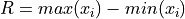
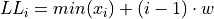

Graphical Representations of Data#
Definitions#
Frequency
The number of times an observation x occurs in a sample S.

Frequency Distributions#
Ungrouped Distributions#
Suppose you ask 10 people their favorite color and the following data set represents their answers,

Where
b = response of “blue” g = response of “green” o = response of “orange” r = response of “red” y = response of “yellow “
An ungrouped frequency distribtion is simply a table where each entry represents the frequency of every possible observation,
x |
f(x) |
|---|---|
b |
2 |
g |
2 |
o |
1 |
r |
4 |
y |
1 |
Grouped Distributions#
The steps for constructing a grouped frequency distribution are given below.
- Steps
Find the range of the data sets.

Choose a number of classes. Typically between 5 and 20, depending on the size and type of data.
Find the class width. Round up, if necessary.

Find the lower and upper class limits LLi and ULi for each i up to n, i.e. for each class.



Find the lower and upper class boundaries LBi and UBi for each i up to n, i.e. for each class,


Sort the data set into classes and tally up the frequency of each class.
Histograms#
TODO
Variations#
TODO
Bar Chart#
TODO
Pareto Charts#
TODO
Stem-Leaf Plots#
TODO
Relative Frequency Plots#
TODO
Distribution Shapes#
TODO
Uniform#
TODO
Normal#
TODO
Bimodal#
TODO
Skewed#
TODO
Fat-tailed#
TODO
Ogives#
TODO
Construction#
TODO
Other Types of Graphs#
TODO
Pie Chart#
TODO
Time Series#
TODO